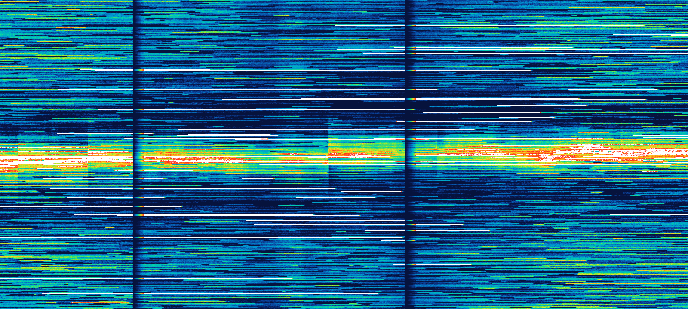

open-dom-heatmap turns order-book depth into a clean, stable liquidity heatmap: percentile colouring, exact parallel backfill in web workers, a fast canvas renderer and a ready-made chart. Zero-dependency JavaScript with TypeScript types. Live Binance demo.
Features
Stable colouring
Size relative to a local and wide background with percentile cut-offs, so one huge order never rescales the whole picture.
Exact parallel backfill
Long histories split across web workers reproduce the sequential result exactly.
Fast canvas renderer
Volume-dominance downsampling keeps walls visible when zoomed out; a new column draws in under 1 ms.
Ready-made chart
DomHeatmap with zoom, pan, live-edge follow, HiDPI, mid-price line and overlays.
Order-book helpers
From Map, [price, size] pairs or objects to heatmap columns, with an optional spike filter.
Zero dependencies
ES modules for browser and Node, TypeScript declarations included.
Install
git clone https://github.com/Kessler833/open-dom-heatmap.git
cd open-dom-heatmap
npm test
npm run demoFull instructions, requirements and troubleshooting are in the README on GitHub.
Not affiliated with Bookmap or ATAS. “Bookmap-style” describes the kind of picture.
More open-source projects by Hannes Kapsch
- Ornith GTX 1070 Inference Engine: A 35B-parameter mixture-of-experts model on a single 8 GB GTX 1070, at about 25–30 tokens per second.
- Hotswitch: Switch the Claude Desktop app between several Claude accounts with one click. No signing in again, no 2FA every time.
- Claude Critter: A tiny desktop pet that lives in the Claude desktop app, reacts to everything Claude does and never costs a token.
- tools++: An MCP server with 55 small tools so Claude stops guessing: exact math, dates and holidays, CSV, SQLite, PDF, archives, ports, ffmpeg.